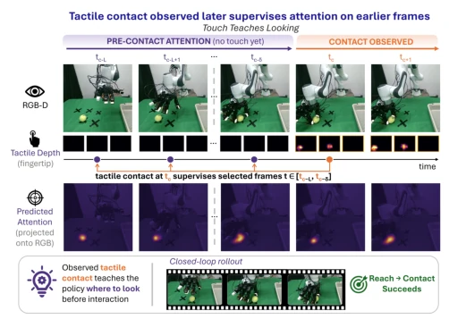
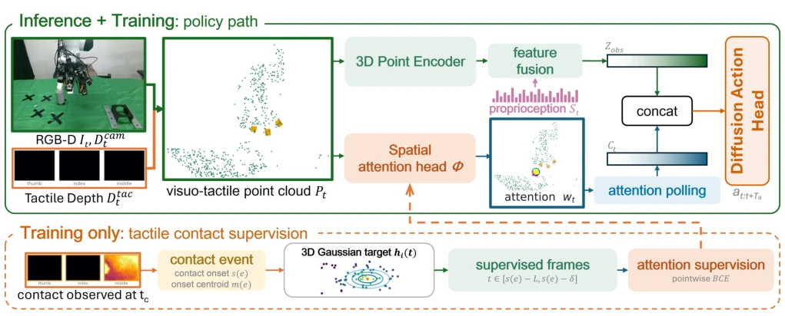
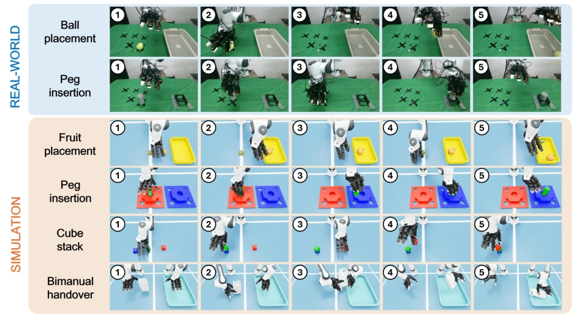
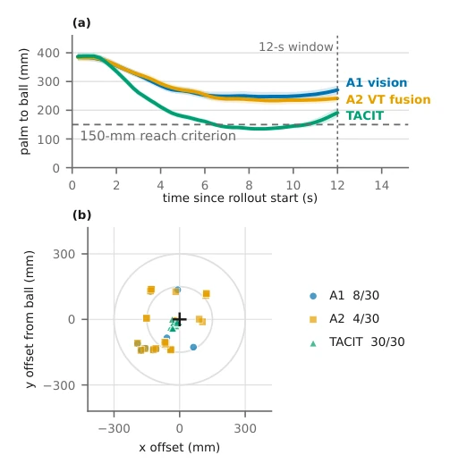
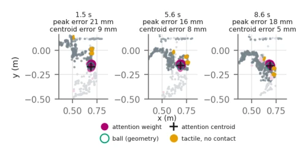

<!DOCTYPE html><html lang="en" class="lang-en"><head><meta charset="utf-8">
<meta name="viewport" content="width=device-width,initial-scale=1">
<title>TACIT: Tactile Contact Supervision for Spatial Attention in Dexterous Manipulation</title><style>
body{font:16px/1.7 -apple-system,Segoe UI,Roboto,'Noto Sans CJK SC',sans-serif;
 max-width:860px;margin:0 auto;padding:32px 20px;color:#1a1a1a;background:#fafafa}
h1{font-size:24px;line-height:1.3} h2{font-size:19px;border-left:4px solid #6c8cff;
 padding-left:10px;margin-top:34px;color:#27408b}
.meta{color:#666;font-size:13px;margin-bottom:8px}
.meta a{color:#6c8cff;text-decoration:none;margin-right:10px}
figure{margin:16px 0;text-align:center}
figure img{max-width:100%;border:1px solid #e0e0e0;border-radius:6px;background:#fff}
figcaption{font-size:12px;color:#777;margin-top:6px}
.badge{background:#ffb454;color:#000;font-size:11px;font-weight:700;padding:2px 8px;border-radius:4px}
.back{font-size:13px}
.en{display:none}
.lang-en .zh{display:none}
.lang-en .en{display:revert}
.langbtn{position:fixed;top:12px;right:12px;background:#27408b;color:#fff;border:0;
 border-radius:6px;padding:6px 12px;cursor:pointer;font:inherit;z-index:10}
.catgrid{display:grid;grid-template-columns:repeat(auto-fill,minmax(155px,1fr));gap:10px;margin:12px 0}
.catblock{display:flex;flex-direction:column;align-items:center;justify-content:center;gap:8px;
 min-height:72px;padding:12px;background:#e3e7ef;border:2px solid #6c8cff;
 border-radius:10px;color:#1a2030;text-decoration:none;text-align:center;font-size:13px;font-weight:600;
 transition:background .15s}
.catblock:hover{background:#bcc4d6}
.catblock .cnt{color:#2f6bff;font-size:14px;font-weight:800}
</style></head><body>

<button class="langbtn" id="langbtn" onclick="toggleLang()">中文</button>
<script>
function setLang(lang){
  var en=lang!=='zh';
  document.documentElement.classList.toggle('lang-en',en);
  document.documentElement.lang=en?'en':'zh-CN';
  var b=document.getElementById('langbtn');
  b.textContent=en?'中文':'English';
  b.setAttribute('aria-label',en?'Switch to Chinese':'切换为英文');
  var title=document.querySelector('title');
  if(title && title.dataset.en) title.textContent=en?title.dataset.en:title.dataset.zh;
}
function toggleLang(){
  var lang=document.documentElement.classList.contains('lang-en')?'zh':'en';
  try{localStorage.setItem('rd_lang',lang)}catch(e){}
  setLang(lang);
}
(function(){var lang='en';try{lang=localStorage.getItem('rd_lang')||'en'}catch(e){}setLang(lang)})();
</script>

<p class="back"><a href="../index.html" onclick="if(history.length>1){history.back();return false}"><span class="zh">← 返回</span><span class="en">← Back</span></a></p>
<h1>TACIT: Tactile Contact Supervision for Spatial Attention in Dexterous Manipulation</h1>
<p class="meta">Yanhou Lai, Fucai Zhu, Ruiqiang Wang, Koichi Hashimoto<br>
<a href="http://arxiv.org/abs/2609.24507v1">abs</a><a href="https://arxiv.org/pdf/2609.24507v1">pdf</a></p>
<h2><span class="zh">论文点评</span><span class="en">Review</span></h2><div class="zh">这篇论文给触觉数据找了个新活：不用它直接控制，而是拿来给视觉注意力“补课”。TACIT 的核心在于利用接触时刻的触觉反馈，反向监督之前的视觉帧，强迫策略在摸到东西前就知道东西在哪。这招挺聪明，省去了昂贵的点标注，但本质上还是在“已知答案”的范围内做题。实验数据确实亮眼，球放置成功率从 10% 干到 66.7%，但这主要解决了“够不着”的问题，至于“抓不稳”或“放不准”，论文里也没避重就轻。局限在于它依赖刚体接触，对软体或复杂场景的泛化能力存疑，毕竟它没证明出了演示区域还能行。总的来说，是个在特定约束下非常有效的工程巧思，但离通用具身智能还有距离，属于“在框子里跳舞跳得最好”的类型，适合对空间定位要求高但环境相对固定的场景。</div><div class="en">This paper finds a new role for tactile data: instead of using it for direct control, it is used to &quot;supplement&quot; visual attention. The core of TACIT lies in using tactile feedback at the moment of contact to backward-supervise previous visual frames, forcing the policy to know where the object is before touching it. This approach is quite clever, saving expensive point annotations, but essentially it is still solving problems within the scope of &quot;known answers&quot;. Experimental data is indeed impressive, with ball placement success rate increasing from 10% to 66.7%, but this mainly solves the problem of &quot;not reaching&quot;. As for &quot;unstable grasp&quot; or &quot;inaccurate placement&quot;, the paper does not sidestep the critical issues. The limitation lies in its reliance on rigid body contact, raising doubts about generalization to soft bodies or complex scenes, after all it has not proven it works outside the demonstration area. Overall, it is a very effective engineering trick under specific constraints, but it is still far from general embodied intelligence, belonging to the type of &quot;dancing best within the box&quot;, suitable for scenarios with high spatial localization requirements but relatively fixed environments.</div><h2><span class="zh">研究动机</span><span class="en">Motivation</span></h2><div class="zh">具身策略学习常面临“死记硬背”的困境：基于少量演示训练的策略往往只能复现轨迹，无法根据物体当前位置调整。文中指出，87/92 的基线失败源于手到了错误位置而非抓握失败。现有方法试图引入空间先验，如 VIOLA [6] 用物体提议，P3-PO [1] 依赖人工标注点，SKIL [3] 和 GenDP [4] 则依赖视觉基础模型提取关键点。这些方法要么需要额外标注成本，要么受限于视觉模型的泛化性。TACIT 旨在解决这一痛点：利用演示中自然发生的触觉接触作为物理空间目标，无需额外标注即可为视觉注意力提供监督。这不仅能降低数据收集门槛，还能让策略在接触前就建立空间 grounding，避免盲目搜索，从而提升 Few-shot 学习下的空间泛化能力，特别是对于缺乏视觉特征的目标。</div><div class="en">Embodied policy learning often faces the dilemma of &quot;rote memorization&quot;: policies trained on few demonstrations often can only reproduce trajectories, unable to adjust based on the object&#x27;s current position. The paper points out that 87/92 baseline failures stem from the hand reaching the wrong position rather than grasp failure. Existing methods attempt to introduce spatial priors, such as VIOLA [6] using object proposals, P3-PO [1] relying on manually annotated points, while SKIL [3] and GenDP [4] rely on vision foundation models to extract keypoints. These methods either require additional annotation costs or are limited by the generalization of vision models. TACIT aims to solve this pain point: using naturally occurring tactile contact in demonstrations as physical spatial targets, providing supervision for visual attention without extra annotation. This not only lowers the data collection threshold but also allows the policy to establish spatial grounding before contact, avoiding blind search, thereby improving spatial generalization ability under Few-shot learning, especially for targets lacking visual features.</div><figure><figcaption>Fig. 1. TACIT overview. In the illustrated ball demonstration, contact at tc provides training-only supervision for spatial attention at earlier frames t &lt; tc. Attention is predicted on sampled camera points and projected onto RGB for visualization.</figcaption></figure><h2><span class="zh">方法</span><span class="en">Method</span></h2><div class="zh">TACIT 包含两个核心组件：触觉接触监督生成与注意力条件扩散策略。首先，从遥操作演示中提取触觉接触事件，计算接触质心 $m(e)$。对于每个早于接触帧 $t$ 的相机点云，生成以接触质心为中心的 Gaussian 目标分布。训练时，通过辅助注意力损失 $L_{att}$ 监督相机点注意力分数，使其逼近该高斯分布。推理时，注意力头对相机点进行加权池化，生成空间特征 $ar{p}_t$，结合峰值分数和熵项，共同作为扩散策略的条件输入。该架构不改变主策略的观测编码，仅增加注意力分支。关键创新在于“回溯监督”：利用接触后的触觉信息指导接触前的视觉关注，且标签生成完全自动化，无需物体模型或人工干预。双臂扩展时，每只手独立实例化注意力头，分别监督各自接触前的帧，确保多臂协作时的空间一致性，且触觉观测在推理时仍作为输入保留。</div><div class="en">TACIT comprises two core components: Tactile Contact Supervision Generation and Attention-Conditioned Diffusion Policy. First, extract tactile contact events from teleoperation demonstrations and compute the contact centroid $m(e)$. For each camera point cloud earlier than contact frame $t$, generate a Gaussian target distribution centered at the contact centroid. During training, supervise camera point attention scores via auxiliary attention loss $L_{att}$ to approximate this Gaussian distribution. During inference, the attention head performs weighted pooling on camera points to generate spatial feature $ar{p}_t$, combined with peak score and entropy term, jointly serving as condition input for the diffusion policy. This architecture does not change the main policy&#x27;s observation encoding, only adding an attention branch. The key innovation lies in &quot;retrospective supervision&quot;: using tactile information after contact to guide visual attention before contact, and label generation is fully automated, requiring no object models or human intervention. When extending to dual-arm, each hand independently instantiates an attention head, supervising frames before their respective contacts separately, ensuring spatial consistency during multi-arm collaboration, and tactile observations are retained as input during inference.</div><figure><figcaption>Fig. 2. TACIT architecture. An attention head over camera points supplies a pooled spatial feature alongside the shared visuotactile observation encoding. During training, Gaussian targets derived from tactile contact supervise the camera-point scores. Bimanual control instantiates one attention head per hand.</figcaption></figure><h2><span class="zh">实验</span><span class="en">Experiments</span></h2><div class="zh">在 Franka 机械臂 + LEAP 手 + 触觉指尖的实机平台上，评估了球放置和插销插入任务。每个任务 10 个演示，30 次测试。TACIT 在球放置上达到 66.7% 成功率，插销插入 73.3%，远超 Vision-only DP3 [11] 和 3D VT fusion [14]。关键指标显示，TACIT 消除了所有“到达前”失败，基线则大量失败于未到达目标区域。消融实验 A2.5（移除监督损失）表明，仅靠架构容量不足以复现增益，证明显式监督的必要性。仿真任务中，TACIT 在插销和堆叠任务上表现提升，但在水果放置上与基线持平。跨位置测试显示，在演示区域内部（in-hull）未见位置有交互改进，但泛化到区域外能力未验证。此外，注意力定位在接触前 9 秒内误差较小，验证了视觉预测的有效性，且所有失败均发生在到达后，说明接触监督主要优化了接近阶段。</div><div class="en">Evaluated on a physical platform of Franka arm + LEAP hand + tactile fingertip, assessing ball placement and peg insertion tasks. 10 demonstrations per task, 30 tests. TACIT achieved 66.7% success rate on ball placement, 73.3% on peg insertion, far exceeding Vision-only DP3 [11] and 3D VT fusion [14]. Key metrics show TACIT eliminated all &quot;pre-arrival&quot; failures, while baselines failed largely on not reaching the target area. Ablation experiment A2.5 (removing supervision loss) indicates that architecture capacity alone is insufficient to reproduce the gain, proving the necessity of explicit supervision. In simulation tasks, TACIT showed performance improvement on peg and stacking tasks, but was on par with the baseline on fruit placement. Cross-position tests show interaction improvement at unseen positions inside the demonstration area (in-hull), but generalization ability outside the area was not verified. Additionally, attention localization error is small within 9 seconds before contact, validating the effectiveness of visual prediction, and all failures occurred after arrival, indicating contact supervision mainly optimized the approach phase.</div><figure><figcaption>Fig. 3. Evaluation tasks. Real-robot ball placement and peg insertion provide the primary physical-policy results; simulation evaluates three single-arm tasks and bimanual handover. The real and simulated peg tasks are distinct instances. Numbers mark rollout stages.</figcaption></figure>
<figure><figcaption>Fig. 4. Ball approach over thirty trials per policy. (a) Mean palm-origin- to-ball-center distance; shading is one standard error, the horizontal dashed line is the 150-mm 3D reach criterion, and the vertical dotted line marks the end of the 12-s reach-assessment window. (b) Horizontal palm offsets at closest 3D approach; rings are 150- and 300-mm references, while counts use the full 3D criterion.</figcaption></figure>
<figure><figcaption>Fig. 5. Attention before tactile activation in one real ball rollout. The geometric ball center is independent of the head; titles show peak/centroid errors. Tactile points remain inactive until first contact at 12.6 s.</figcaption></figure>
</body></html>